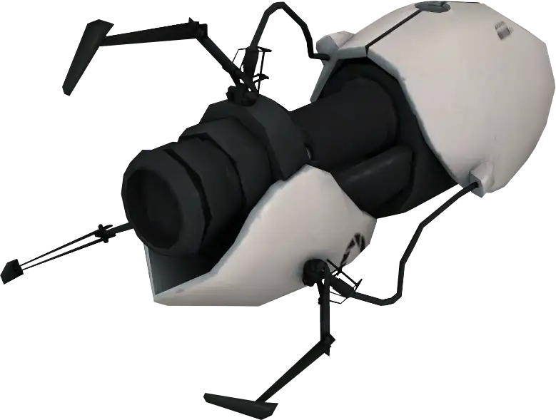

The Aperture Science Handheld Portal Device, originally marketed in the 1950s as an Aperture Science Portable Quantum Tunneling Device, also commonly known as a Portal Gun or by its acronym, "ASHPD", is an experimental tool used to create two portals through which objects can pass. Used in the Enrichment Center's testing tracks, it is a Test Subject's primary tool to complete each test.
